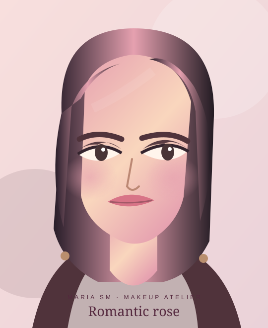
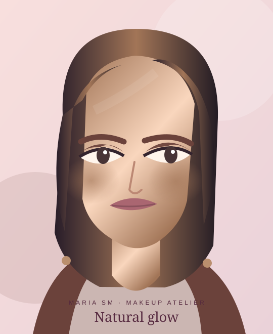
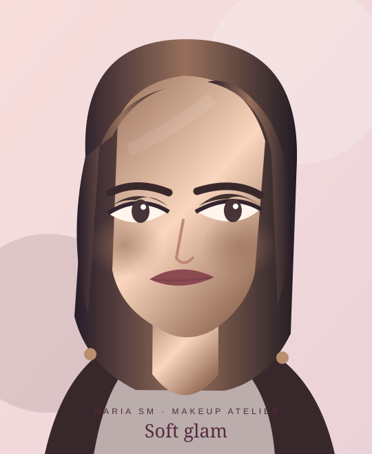
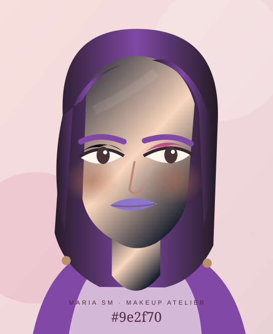
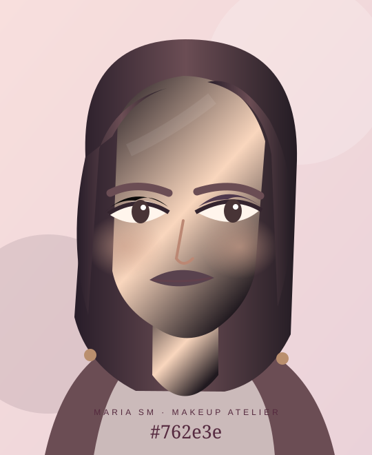
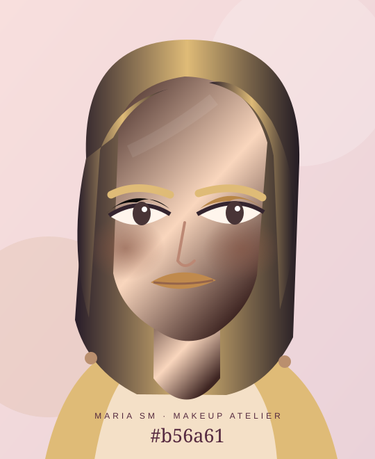
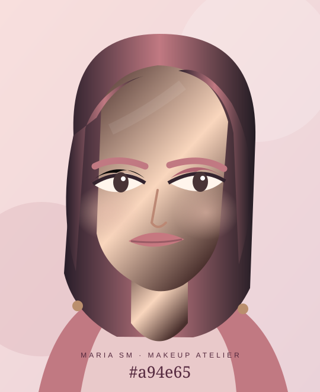
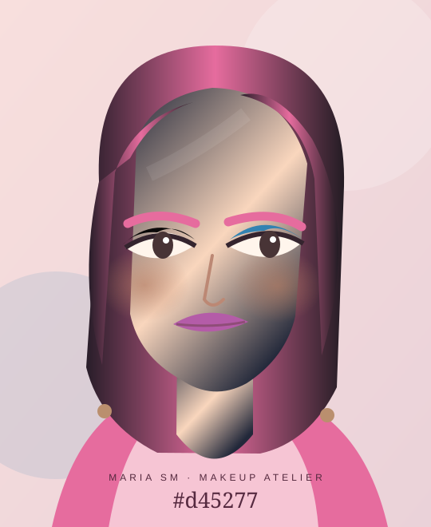
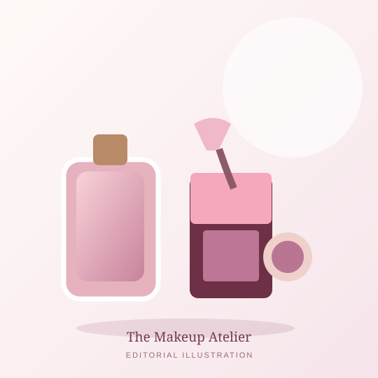

Know your canvas
Skin preparation, colour match and finish determine how comfortable a look feels.
THE MAKEUP ATELIER · THE COMPLETE BEAUTY EDITION
History, colour, texture and techniques. Discover the art of makeup from ancient cultures to contemporary creativity, then learn each step—with real shopping references and a beautiful original lookbook.
Illustrations are original AI-assisted vector art. Product photos are credited separately.

THE ART OF COLOUR · MARIA SM01 / THE FOUNDATION OF GREAT MAKEUP
Makeup has no single correct style. Begin with hygiene and comfort, choose colours that you love, and practise in forgiving layers. You do not need a professional kit to enjoy artistry.
Skin preparation, colour match and finish determine how comfortable a look feels.
Placement, pressure, blending and lighting can matter more than the price of the product.
Choose natural, romantic, smoky, colourful or entirely unexpected combinations.
02 / THE ARTISTIC LOOKBOOK
Eight original AI-assisted illustrated portraits designed for this edition—not real people, product advertising or historical reconstructions. Explore the mood, then find the techniques below.

01 · THE LOOKBOOK
A thin skin-like base, diffused peach or rose blush, groomed brows and soft lips.
Key products: Tinted moisturiser · cream blush · brown mascara.
Explore the techniques ↗02 · THE LOOKBOOK
Rose-toned eyeshadow, lifted blush, delicate highlight and softly defined berry-pink lips.
Key products: Rose matte shadow · pink blush · sheer lipstick.
Explore the techniques ↗
03 · THE LOOKBOOK
Neutral transition shades, subtle outer-corner depth, feathered lashes and gently sculpted cheeks.
Key products: Neutral palette · bronzer · lip liner.
Explore the techniques ↗
04 · THE LOOKBOOK
Crisp colourful liner or negative space with a controlled, balanced complexion.
Key products: Colour liner · precise detail brush · primer.
Explore the techniques ↗
05 · THE LOOKBOOK
Gradual depth around the lash line, satin or matte transition and blended lower-lash detail.
Key products: Kohl-style cosmetic pencil · matte shadows.
Explore the techniques ↗
06 · THE LOOKBOOK
Warm bronzing, gold shimmer, brown liner and warm satin lips.
Key products: Golden eyeshadow · bronzer · warm gloss.
Explore the techniques ↗
07 · THE LOOKBOOK
Use one colour family—in suitable eye, cheek and lip products—for an elegant tonal look.
Key products: Eye-safe pink shadow · blush · matching lip.
Explore the techniques ↗
08 · THE LOOKBOOK
A clean base supports high-energy teal, pink, lilac or cobalt on lids or liner.
Key products: Eye-approved vivid palette · detail brush.
Explore the techniques ↗Portraits: original MariaSM AI-assisted vector illustrations, created for education and mood boards. Exact cosmetic placement will vary by face and eye shape.
03 / CULTURES, CENTURIES AND CHANGING IDEALS
Makeup did not originate in one country. Ritual, trade, class, performance, cinema and technology have shaped different beauty practices worldwide. Historical materials and techniques should not be copied without safety checks.
THE LONG STORY OF PIGMENT
From ancient cosmetic vessels to today's colour palettes, makeup reflects society and personal identity. This overview highlights selected examples rather than a single universal chronology. Dates and interpretations can remain debated.
Explore a real Egyptian cosmetic tool ↗Ancient Egyptian women and men used eye cosmetics, particularly dark mineral-based powders applied with small sticks. Surviving kohl vessels, mirrors and cosmetic kits provide extraordinary evidence. Today, historic mineral recipes should never be recreated on skin: some involved toxic lead compounds.
Evidence: The Metropolitan Museum of Art ↗Cosmetic preparation and adornment varied across Mesopotamia, Greece and Rome, spanning fragrant oils, face preparations and pigments. Sources often reflect elite practices rather than everyone's daily routine; regional variations and chronology matter.
Archaeological material and historical texts ↗Across India and neighbouring regions, kajal or surma, henna and ornamentation have diverse cultural histories. Elaborate bridal looks, eye definition and traditional adornment continue in many communities, with styles changing by region, religion and individual preference.
Living traditions, not a single fixed style ↗Chinese cosmetic traditions encompass face powders, shaped brows, lip colours and decorative forehead motifs in selected periods. Images of Tang-dynasty court fashion inspire modern interpretations, but reconstructions must be differentiated from evidence of everyday practice.
Styles differed by dynasty, class and setting ↗Heian elite beauty ideals included distinctive hair, face and brow practices; later kabuki and geisha-related makeup developed highly codified conventions. These are not interchangeable, nor do they represent how all Japanese people dressed. Contemporary J-beauty is a different subject.
Cultural context is essential ↗Kohl and related eye-decorating practices occur in distinct communities with different histories and meanings. Contemporary graphic liner, luminous skin and rich lipstick are modern creative choices rather than a uniform regional tradition.
Avoid copying ritual or ceremonial markings without context ↗Elite beauty fashions in parts of Europe at times prized a pale complexion. Some historical cosmetics relied on lead or mercury and carried serious health risks. Changes in morality, medicine, class and availability shaped how visible makeup could be.
Never reproduce historical hazardous ingredients ↗Powdered faces, bright rouge and beauty patches became fashionable in some aristocratic circles. Cosmetics expressed status, theatricality and the presentation of self; such styles were never universal across European society.
Court portraiture shows stylised ideals ↗Commercial cosmetics, new packaging and industrial manufacture gradually changed access. Makeup practices could remain discreet in some settings while theatre and performance embraced highly visible colour.
Commercial history differs from universal practice ↗Film and photography influenced the spread of defined brows, dark eye makeup and shaped lips. Early screen techniques were adapted to harsh lighting and monochrome cinematography, so they were not identical to everyday makeup.
Screen makeup is an art in its own right ↗Fashion magazines, advertising and cinema popularised contrasting looks, from polished 1950s lips to 1960s graphic eyes. International adoption varied, and everyday looks were often simpler than famous editorials.
Popular imagery is not a whole society ↗Shimmer, high-contrast eye colour, alternative music scenes, contouring and polished neutral looks all had their moments. Global media and subcultures cross-pollinated new techniques.
One decade contains multiple aesthetics ↗Online tutorials, creator communities and expanded shade ranges transformed learning and shopping. Skin-first makeup, expressive colour, K-beauty and J-beauty-inspired aesthetics, graphic liner and vintage revivals can coexist. Treat trends as options—not standards of beauty.
Individual preference, accessibility and safety first ↗Historical caution: traditional kohl can contain hazardous metals; ancient whitening products sometimes contained lead or mercury. Do not reproduce these historical recipes. Use modern regulated cosmetics intended for the appropriate body area.
04 / THE STEP-BY-STEP MAKEUP ACADEMY
Practical instructions for skin, forehead, eyes, brows, lashes, nose, cheeks, lips, sculpting, finishing and hygiene. Start with a small amount of product and adapt the placement to your own features.
Tools: Gentle cleanser, moisturiser, SPF, optional primer
Professional note: A makeup product with incidental SPF is not a substitute for sufficient sunscreen.
Tools: Foundation, complexion brush or sponge
Professional note: Deep skin tones may need multiple reference swatches; test actual undertone, not packaging.
Tools: Concealer, small flat brush, clean fingers
Professional note: Peach/orange correctors can neutralise blue-grey darkness on some complexions; depth matters.
Tools: Soft powder brush, bronzer, optional contour
Professional note: No face needs contour. Avoid placing a darker stripe in the centre of the forehead.
Tools: Spoolie, brow pencil or powder, optional gel
Professional note: Do not over-pluck based on a single passing trend. Avoid getting product inside the eyes.
Tools: Eye-safe palette, fluffy blending and flat shader brushes
Professional note: Pressed pigments and craft glitter are not automatically approved for the immediate eye area. Check labels.
Tools: Eye-safe pencil, gel or liquid liner, cotton bud
Professional note: Do not apply eyeliner to irritated eyes. Waterline application is optional and can be uncomfortable.
Tools: Mascara, optional clean lash comb
Professional note: Never share mascara or add water to a dried tube; discard contaminated products.
Tools: Small contour brush, subtle matte contour
Professional note: Contour is an artistic choice, not a corrective necessity; no nose shape needs fixing.
Tools: Cream or powder blush, cheek brush or fingers
Professional note: Use a light hand—highly pigmented liquid blush can build quickly.
Tools: Bronzer, cool-neutral contour, clean fluffy brushes, highlighter
Professional note: There is no universal diagonal stripe that flatters every face.
Tools: Lip balm, lip pencil, lipstick, optional gloss
Professional note: Lip products should not be repurposed as eye makeup unless specifically eye-approved.
Tools: Blotting papers, powder puff, optional setting mist
Professional note: Setting spray is not sunscreen, and aerosol products should be used in well-ventilated places.
Tools: Remover, cleanser, soft cloth, brush cleanser
Professional note: Stop use if a product causes irritation; seek clinical advice for persistent reactions.
05 / COLOUR INTELLIGENCE
Makeup colour theory can help create harmony and contrast. It never needs to dictate what someone can or cannot wear based on complexion, age, gender or eye colour.
SHADE STORY
Daily versatility: beige, rose taupe, caramel and warm cocoa. Choose depth that shows against your skin.
SHADE STORY
Golden, terracotta and copper tones create a warm luminous direction.
SHADE STORY
Dusty lavender, mauve and cool brown build understated definition.
SHADE STORY
Fuchsia, teal, violet and gold work as a controlled accent or full editorial statement.
SHADE STORY
Try warm red, blue-red, rose-nude and berry; formula and contrast matter as much as undertone.
SHADE STORY
Peach, rosy pink, terracotta and wine tones can look natural across different skin depths in appropriate saturation.
SHADE STORY
Match depth and texture to brow hair; ashy or warm browns work differently across people.
SHADE STORY
Gold, rose gold, champagne and pink pearl create distinct reflections.
HOW TO PICK A SHADE
Test foundation on your jaw rather than only your wrist. For blush and lipstick, consider saturation and how the colour reads against your individual skin depth. For eyes, try complementary contrast or a softer analogous palette. Lighting changes perception, so check your final look in daylight.
06 / THE COSMETIC ENCYCLOPAEDIA
Understanding how products behave helps you buy fewer unnecessary things and use what you already own more effectively.
Matte reduces apparent shine; satin balances glow and refinement; dewy reflects more light; metallic and glitter finishes create intentional sparkle.
Sheer evens subtly; medium covers more; full is opaque. Build thin coats rather than choosing the heaviest formula by default.
Liquid and cream textures can feel flexible; powder can control shine; sticks are portable. Dry and oily zones may need different strategies.
Warm, cool, neutral and olive are descriptive starting points, not strict rules. Test in daylight and allow for oxidation or colour shifts.
Fair, light, medium, tan, deep and very deep are broad merchandising labels. Always compare actual shades on your own skin.
Hooded, monolid, deep-set, round and almond-shaped are useful descriptive terms, but every eye is unique; place colour while looking straight ahead.
Complementary contrast can intensify a look; analogous tones are harmonious. Choose based on desired effect, not rules for eye colour.
Pigments, binders, waxes, oils, film formers, preservatives and silicones contribute to texture, colour and wear. Read the current INCI list.
Sunscreen is applied as a separate adequate layer; a small amount of foundation with SPF rarely provides the labelled protection.
The open-jar PAO symbol shows how many months many products are intended to last after opening. Eye-area products may require more frequent replacement.
Thin, flexible layers often settle more naturally than heavy powder. There are no age restrictions on shimmer, red lipstick or colour.
Fragrance-free may be preferable for some. Patch-test when appropriate, check allergens, and avoid applying products to inflamed or injured skin.
07 / THE MAKEUP SHOPPING EDIT
Products and tools to explore, with accessible prices, brand information, imagery and links to shop or compare. Shade and formulation always take priority over popularity.
Price transparency · 31 October 2026: Specific euro prices identified from official brands or retailer pages are labelled as reference prices; other cards show explicit estimated price ranges, never falsely presented as live offers. Prices, discounts, stock and shade availability change. Where a real product photograph is available, it is credited; remaining cards show clearly labelled original category illustrations rather than pretending to be product photos. If a remote image fails, a local illustration appears instead. No affiliate links and no invented customer ratings.
 ACTUAL PRODUCT PHOTO
ACTUAL PRODUCT PHOTO12 ml · official Italy list
Specific price reference · 31 October 2026
Everyday black mascara for volume and length.
See product / shop ↗Photo source: ModaBodyShop. Image owned by its source; if unavailable a generic illustration is shown.
3 g · official Italy list
Specific price reference · 31 October 2026
A classic creamy red lipstick at an accessible price.
See product / shop ↗Photo source: Product photo sourced via Saubhaya / Shopee. Image owned by its source; if unavailable a generic illustration is shown.
 ACTUAL PRODUCT PHOTO
ACTUAL PRODUCT PHOTO30 ml · dm Italy reference
Specific price reference · 31 October 2026
Matte foundation for normal-to-oily skin; shade must be tested.
See product / shop ↗Photo source: Whites Saudi Arabia. Image owned by its source; if unavailable a generic illustration is shown.
 ACTUAL PRODUCT PHOTO
ACTUAL PRODUCT PHOTO7.5 ml · Sephora Italy
Specific price reference · 31 October 2026
Highly pigmented liquid blush: begin with one small dot.
See product / shop ↗Photo source: Who What Wear. Image owned by its source; if unavailable a generic illustration is shown.
 ACTUAL PRODUCT PHOTO
ACTUAL PRODUCT PHOTOBrushes + sponge · Douglas Italy
Specific price reference · 31 October 2026
A flexible starter set for face, eyes and cheek blending.
See product / shop ↗Photo source: Ulta México. Image owned by its source; if unavailable a generic illustration is shown.
 ACTUAL PRODUCT PHOTO
ACTUAL PRODUCT PHOTO8 ml · approximate retail range
Indicative EUR range, not a verified live offer
Soft glossy lip colour, available in many shades.
See product / shop ↗Photo source: Apohem. Image owned by its source; if unavailable a generic illustration is shown.
 ACTUAL PRODUCT PHOTO
ACTUAL PRODUCT PHOTO9-pan palette · indicative
Indicative EUR range, not a verified live offer
A mix of everyday mattes and evening shimmer shades.
See product / shop ↗Photo source: Loja Glamourosa. Image owned by its source; if unavailable a generic illustration is shown.
 ACTUAL PRODUCT PHOTO
ACTUAL PRODUCT PHOTOMascara · approximate EU range
Indicative EUR range, not a verified live offer
Lengthening mascara with a distinctive flexible wand.
See product / shop ↗Photo source: Wehkamp. Image owned by its source; if unavailable a generic illustration is shown.
 ACTUAL PRODUCT PHOTO
ACTUAL PRODUCT PHOTO8 g · indicative price band
Indicative EUR range, not a verified live offer
Finely milled finishing powder for a softly blurred look.
See product / shop ↗Photo source: Strawberrynet. Image owned by its source; if unavailable a generic illustration is shown.
 ACTUAL PRODUCT PHOTO
ACTUAL PRODUCT PHOTO118 ml · indicative price band
Indicative EUR range, not a verified live offer
A final-stage setting mist; use away from eyes and mouth.
See product / shop ↗Photo source: ThaiPick. Image owned by its source; if unavailable a generic illustration is shown.
 ACTUAL PRODUCT PHOTO
ACTUAL PRODUCT PHOTO9 ml · indicative price band
Indicative EUR range, not a verified live offer
Gloss with soft shine, best enjoyed over well-prepared lips.
See product / shop ↗Photo source: Product photography via Ubuy. Image owned by its source; if unavailable a generic illustration is shown.
 ACTUAL PRODUCT PHOTO
ACTUAL PRODUCT PHOTOLipstick · indicative price band
Indicative EUR range, not a verified live offer
Iconic blue-red matte direction; apply over moisturised lips.
See product / shop ↗Photo source: MAC Cosmetics. Image owned by its source; if unavailable a generic illustration is shown.
 ACTUAL PRODUCT PHOTO
ACTUAL PRODUCT PHOTO6 ml · NARS Italy reference
Specific price reference · 31 October 2026
Buildable concealer for small areas and under-eye brightening.
See product / shop ↗Photo source: Helebeauty. Image owned by its source; if unavailable a generic illustration is shown.
 ACTUAL PRODUCT PHOTO
ACTUAL PRODUCT PHOTOPrimer · indicative EU range
Indicative EUR range, not a verified live offer
Grip-texture primer that may suit some foundation combinations.
See product / shop ↗Photo source: e.l.f. Cosmetics. Image owned by its source; if unavailable a generic illustration is shown.
 ACTUAL PRODUCT PHOTO
ACTUAL PRODUCT PHOTO1 sponge · indicative EU range
Indicative EUR range, not a verified live offer
Damp application for liquid or cream complexion textures.
See product / shop ↗Photo source: Beautyblender. Image owned by its source; if unavailable a generic illustration is shown.

ILLUSTRATIVELiquid concealer · indicative range
Indicative EUR range, not a verified live offer
Affordable targeted coverage; check shade and formula locally.
See product / shop ↗Original MariaSM category illustration; not an actual product image.
Foundation · indicative EU range
Indicative EUR range, not a verified live offer
Choose by depth and undertone and test on your jaw.
See product / shop ↗Original MariaSM category illustration; not an actual product image.
Eye liner · indicative EU range
Indicative EUR range, not a verified live offer
Fine-tip liquid liner for controlled wings and graphic accents.
See product / shop ↗Original MariaSM category illustration; not an actual product image.
2.8 g · Sephora Italy reference
Specific price reference · 31 October 2026
Powder highlighter for pinpoint reflections on high points.
See product / shop ↗Original MariaSM category illustration; not an actual product image.
Lip gloss · indicative band
Indicative EUR range, not a verified live offer
Comfort-focused glossy lips in a variety of shades.
See product / shop ↗Original MariaSM category illustration; not an actual product image.
Brow pencil · indicative band
Indicative EUR range, not a verified live offer
Fine strokes for naturally fuller-looking brows.
See product / shop ↗Original MariaSM category illustration; not an actual product image.
Lip balm · indicative price band
Indicative EUR range, not a verified live offer
Tinted lip balm in a prestige format; compare shades and finish.
See product / shop ↗Original MariaSM category illustration; not an actual product image.
1 sponge + case · Douglas Italy
Specific price reference · 31 October 2026
A washable complexion sponge with storage case.
See product / shop ↗Original MariaSM category illustration; not an actual product image.
5 mini brushes · Douglas Italy
Specific price reference · 31 October 2026
Travel-friendly face and eye set with mirror case.
See product / shop ↗Original MariaSM category illustration; not an actual product image.
No matching products. Try a broader word or another filter.
08 / THE MAKEUP TOOLBOX
Good tools make application easier, but you do not need every brush on the market. Build around the products you actually use, and keep every applicator clean.
Dense synthetic bristles for controlled liquid application. Wash regularly and dry flat or with bristles downward.
Typical shopping budget: €8–30
Dampen, squeeze out excess water and bounce onto skin; never rub aggressively. Wash and dry after use.
Typical shopping budget: €5–25
Small rounded or flat head for precise spot and under-eye blending.
Typical shopping budget: €4–20
Large fluffy brush for a light veil; compact puff for targeted setting and touch-ups.
Typical shopping budget: €5–25
Soft medium-sized brush for diffuse powder application; cream blush can also be tapped with fingers.
Typical shopping budget: €6–25
Small angled brush to place subtle shadow; use a clean fluffy brush to soften edges.
Typical shopping budget: €7–28
Small soft brush offers greater control than a huge sweep of shimmer.
Typical shopping budget: €5–20
Packs colour on the lid, especially pressed mattes and shimmers.
Typical shopping budget: €4–19
Diffuses borders between eye colours without removing all pigment.
Typical shopping budget: €4–22
Precise tip for gel eyeliner or brow powder; keep separate from the waterline.
Typical shopping budget: €4–18
Neatens brow hairs and can separate lashes carefully after product application.
Typical shopping budget: €2–13
Use gently on clean lashes before mascara; replace worn pads and avoid pinching.
Typical shopping budget: €6–25
Even, neutral light and stable magnification help with precision without distorting colour.
Typical shopping budget: €15–75
Use gentle cleanser; rinse bristles thoroughly and let them dry fully between uses.
Typical shopping budget: €6–25
Separate clean tools, liquids and used sponges; avoid leaving products in heat.
Typical shopping budget: €9–55
Use carefully for stray hairs and trimming; avoid aggressive over-plucking.
Typical shopping budget: €5–30

THE BEGINNER'S TOOL KIT
One complexion brush, one damp sponge, a fluffy blush brush, a flat shadow brush, a blending brush and a clean spoolie cover many everyday looks. Expand only when a technique requires an additional tool.
Remember that an expensive brush can be useful, but it cannot replace regular cleaning and technique.
Compare tools and costs ↗09 / TRUSTED BEAUTY DESTINATIONS
A curated directory of twelve established retailers and brand sites, from value makeup to prestige cosmetics. Links open their official destinations; shipping, local prices and returns vary.
Designer and prestige
Compare shade collections, reviews and samples.
Across budgets
Large makeup range plus tools and frequent promotions.
Accessible colour
Italian brand with a broad lipstick, shadow and brush range.
Budget beauty
Drugstore foundations, mascaras and skin-friendly basics.
Price comparisons
Multi-brand catalogue; verify seller and size before purchase.
Multi-brand
Beauty sets, tools and cosmetics from many labels.
Professional staples
Explore shade systems and iconic lipstick ranges.
Colour experimentation
Affordable liners, lipstick and creative eye looks.
Entry-level value
Playful budget basics and beginner-friendly colour.
Budget complexion
Base and colour cosmetics at approachable prices.
Prestige complexion
Concealers, blushes and complexion products.
Luxury edit
Department store beauty for premium brands and gifts.
10 / BEAUTY THAT CARES FOR YOU
Learn practical habits for hygiene, sunscreen, expiration dates and ingredient awareness. These guidelines are educational and not a substitute for professional advice.
Use only eye-approved makeup around the eyes, never share mascara or eye liners, and never add water to old formulas. Remove makeup gently and discard products after an eye infection.
Read labels, check known allergens and avoid using cosmetics over broken or inflamed skin. “Natural” is not a safety guarantee. Stop immediately if irritation occurs.
Check eye-area warnings on pigments and glitter. Do not use craft glitter or decorative pigments not approved for cosmetic eye use.
Look for the open-jar symbol and follow label instructions. Replace mascara promptly after contamination; many manufacturers recommend a short life after opening.
Use separate, adequate broad-spectrum SPF 30+ during daytime; an SPF-labelled foundation is not usually applied in sufficient quantity to be the only protection.
Wash reusable tools frequently with suitable mild cleanser and let them dry fully; keep personal-use products away from shared testers and dirty storage.
Eye infections, persistent irritation or an allergic reaction deserve professional assessment. Stop the relevant product, do not cover inflamed skin with more makeup, and consult the product label or a healthcare professional as appropriate.
11 / ANSWERS WITHOUT BEAUTY MYTHS
Practical answers to common questions. Open a topic to see the full guidance.
No. If moisturiser and your foundation already work well together, primer may be unnecessary.
Cream and liquid products are often easier to blend before a powder set, but modern formulas vary; lightly powder only where needed.
Compare several shades along the jaw in daylight, let them settle, and check both depth and undertone on your actual skin.
Brush away loose powder gently before adding concealer; using less shadow and pressing rather than sweeping can reduce fallout.
Only where the specific product is labelled for that use. Lip products are not automatically safe for eyes, and bright pigments may have area restrictions.
Start with a small, manageable kit: tinted base or concealer, blush, mascara, brow product, one versatile eyeshadow and lip product.
Only if you enjoy the artistic effect. It is not necessary and is never a requirement for a particular nose shape.
Wash regularly, especially tools used with liquid products, and dry them completely. Frequency depends on use and your hygiene needs.
No. The amount of foundation normally worn rarely reaches the labelled sunscreen dose. Use separate broad-spectrum SPF 30+.
Stop using it. Avoid eye makeup during inflammation or infection; consult a clinician if symptoms persist.
No. Shade match, suitability, technique and comfort matter more than price or brand prestige.
There is no universal age-specific rule. Thin, flexible textures and well-prepared skin can be comfortable at any age; use the finishes you like.
12 / RESEARCH, IMAGES & TRANSPARENCY
Original editorial explanations and AI-assisted vector illustrations. Real product photographs belong to their respective sources; product cards are not sponsored. Historical chapters are introductions to a much larger scholarship.
Photography: real product photos are externally loaded with on-card source credits. The eight makeup look portraits and fallback product illustration are original AI-assisted vector images created for MariaSM, not photographs of real people or exact products. No purchased endorsements, affiliate partnerships or fabricated review scores. Editorial snapshot: 31 October 2026.